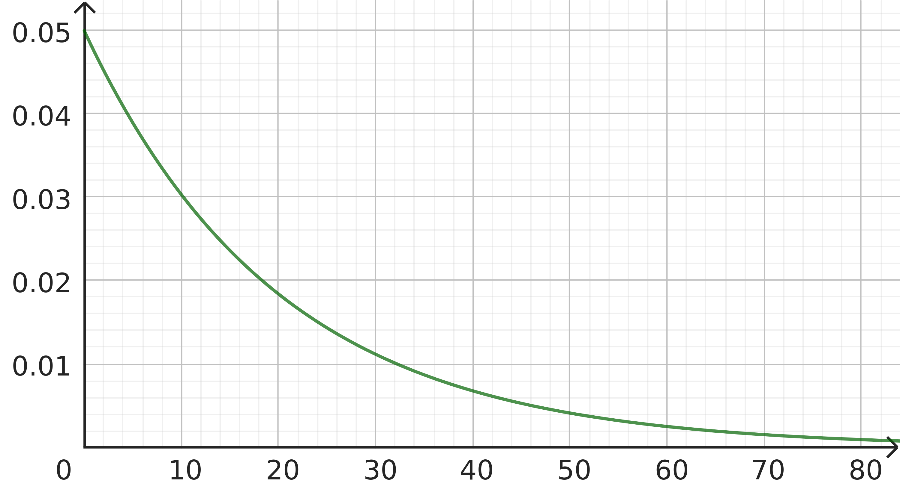

Le temps t est exprimé en minutes.
Les valeurs approchées seront arrondies au centième le plus proche.
[CH4](t) étant la concentration en CH4 à l’instant t , on pose \( f(t) = \frac{\left[CH_4\right](t)}{\left[CH_4\right](0)}\), de manière à ce que l'on ait \(f(0)=100\%=1\).
Les lois cinétiques donnent l’équation différentielle suivante :
\[ (E_1) : f'(t) + 4f(t) = 0 \]
Un amplificateur audio (ancien) contient deux composants essentiels à son fonctionnement : un potentiomètre (résistance variable) et un tube à vide (ancètre du transistor).
Partie A : temps de bon fonctionnement du potentiomètre
Le temps de bon fonctionnement (sans entretien), en années, d'un potentiomètre, est une variable aléatoire R positive qui suit, dans des conditions normales d'utilisation, une loi continue dont la densité est la fonction \(f(t)=0{,}05\textrm{e}^{-0{,}05t}\).
- Hachurer, sur les diagrammes suivants, les surfaces dont les aires correspondent aux probabilités suivantes :
- \(P(2<R<10)\);
- Probabilité que le potentiomètre ne tombe pas en panne durant les 20 premières années.
a.b.
En utilisant le calcul intégral ou bien en expliquant la méthode numérique utilisée, calculer les deux probabilités énoncées à la question précédente. Arrondir au centième.
Ces potentiomètres sont vendus par lots de 20, et on estime que la probabilité qu'un potentiomètre, pris au hasard dans la production (assez importante pour que cela soit assimilé à un tirage avec remise), soit encrassé en moins de 2 ans est 10%.
- En moyenne, dans un lot, combien de potentiomètres sont encrassés au bout de 2 ans ?
- Donner la loi (ainsi que ses paramètres) à utiliser pour calculer la probabilité P que 5 potentiomètres ou plus, dans un lot pris au hasard, soient encrassés au bout de 2 ans. Donner une valeur de P arrondie au centième (il n'est pas nécessaire de justifier).
Partie B : temps de bon fonctionnement du tube à vide
La durée de vie X, en années, d'un tube à vide suit une loi normale de moyenne µ=8 et d'écart-type 2. On donnera les résultats en pourcentage, arrondis à 1% près.
- Déterminer la probabilité que le tube tombe en panne entre la 4ème et la 12ème année.
- Déterminer la probabilité que le tube tombe en panne entre la 8ème et la 16ème année.
Partie C : interactions
On étudie un amplificateur en fonctionnement intensif depuis deux ans ;
on admet que la probabilité que le tube V fonctionne est de 0,98 ; dans ce cas, la probabilité que le potentiomètre R fonctionne est de 0,96. Lorsque le tube ne fonctionne pas, la probabilité que le potentiomètre ne fonctionne pas est de 0,1.
Arrondir les calculs au millième.
- Représenter cette situation par un arbre de probabilités.
- Calculer la probabilité qu'au moins un des deux éléments V ou R ne fonctionne pas.
- Calculer la probabilité que V ne fonctionne pas sachant que R fonctionne